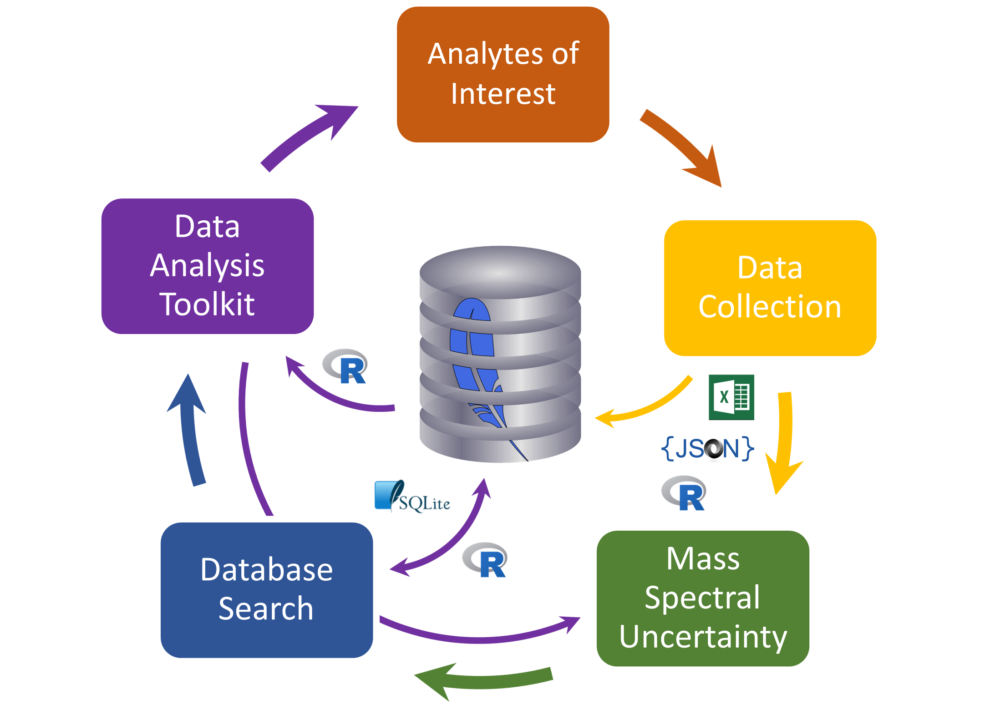

A User Guide for the NIST Database Infrastructure for Mass Spectrometry (DIMSpec) Tool Set
2022-09-16
Preface
The use of mass spectral libraries is essential for the confident identification and reporting of analytical chemistry measureands, whether they be environmental contaminants or novel compounds. Toward that end the US National Institute of Standards and Technology provides a series of mass spectral libraries in use at analytical research, development, and contracting laboratories throughout the US. Contrasting with targeted methods, where analyte identities and their mass spectral properties are known a priori are non-targeted analysis (NTA) methods, where compound identity is unknown. Even when analytes are “known” (i.e. their mass spectral properties have been measured and reported in the literature) different extraction and measurement methods may show slight differences in mass spectral properties. The gold standard for matching mass spectra is through matching with a library of mass spectral standard, yet such standards are available only for a small fraction of “known” analytes.

For analyte classes with decades of analytical study (e.g. polychlorinated biphenyls, vitamins, etc.), such “known” analytes are generally covered well by analytical standards. This is not the case for analyte classes of more recent interest (e.g. per- and polyfluorinated alkyl substances). Research needs generally run ahead of standards availability; new paradigms such as NTA are therefore necessary to assess analyte identity and properties by identifying mass spectral patterns of both the analyte itself and its fragmentation patterns. Analytes characterized in this fashion can then be published for identification in other methods and laboratories. As of 2022, the process of distributing such data still lags behind many research needs.

This book describes a tool set produced by the NIST Chemical Sciences Division to capture data from high resolution accurate mass spectrometric experiments in a formal manner. The Database Infrastructure for Mass Spectrometry (DIMSpec) allows for the creation of portable databases that tie such data with sample and methodological metadata. DIMSpec uses SQLite, a common portable database engine, for data storage and a collected set of data management and NTA tools written in the R language. This includes the ability to rapidly iterate and launch new databases to hold data for a particular project, analyte class of interest, or research program, and results in a single database file that may be shared widely without restriction on resulting use. When used with the associated tools, researchers can leverage NTA tools in active use at NIST and use web applications provided here not only for quality assurance and identification of unknown analytes using current state-of-the-science techniques, but to then record their data and contribute back to the research community. Only open access frameworks were used in the development of DIMSpec.
We believe strongly in the public availability of and open access to research data and hope that the tool set described here can be of use in moving the NTA research community toward a data structure amenable to sharing and reuse and move analytical chemistry data for NTA toward the FAIR principles.
Sincerely,
Jared and Ben
Research Chemists
National Institute of Standards and Technology
Material Measurement Laboratory
Chemical Sciences Division